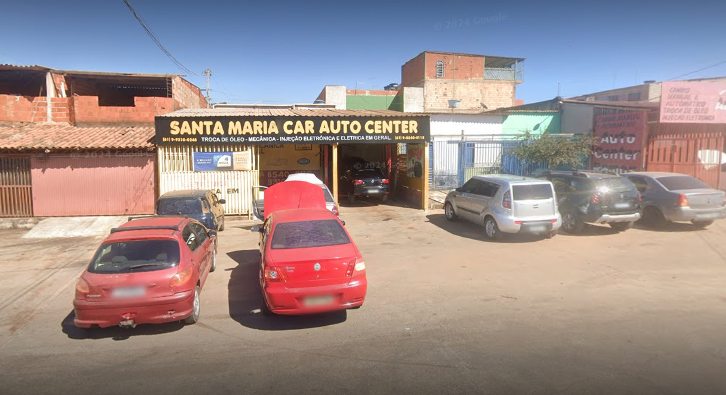
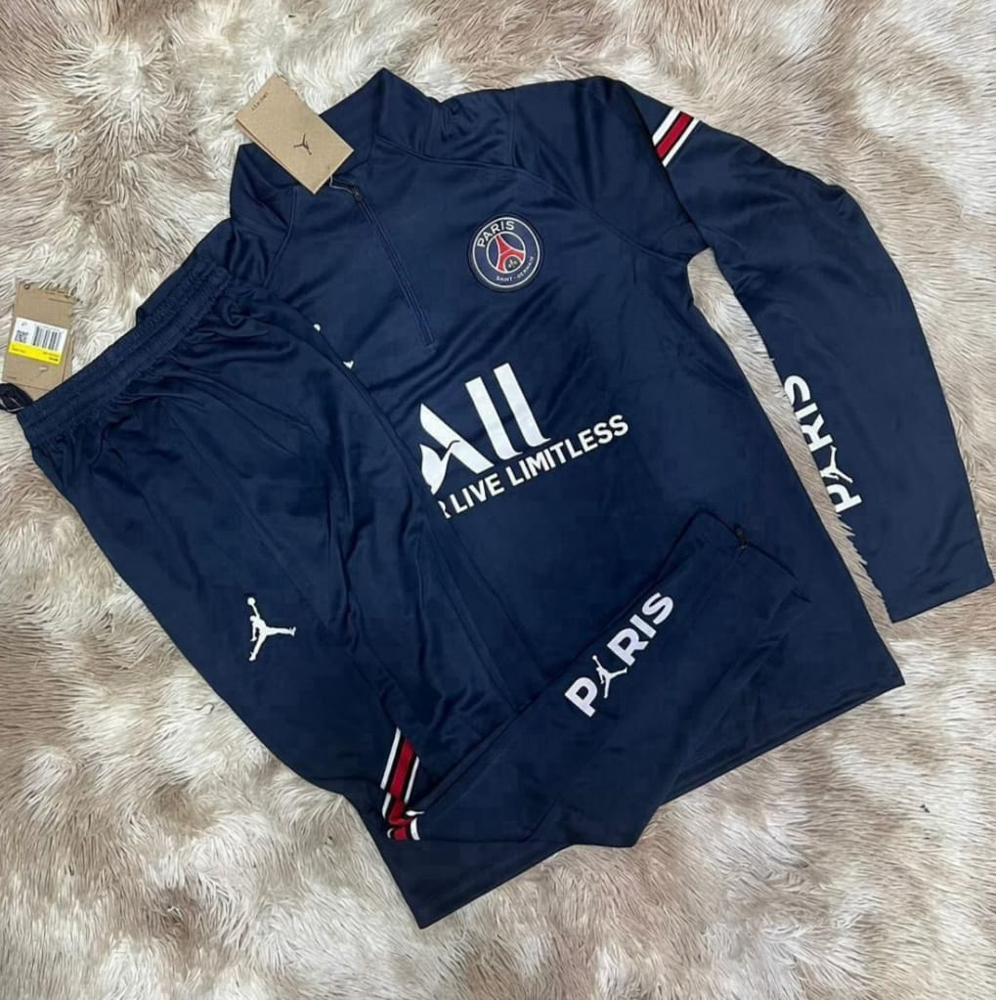

Santa Maria Car Auto Center: A sua parceira de confiança para cuidar do seu carro!
Precisando de um serviço de confiança para o seu carro?A Oficina Santa Maria Car Auto Center se destaca pela qualidade dos serviços e pelo atendimento personalizado. Gerenciada por um profissional altamente qualificado e preparado para realizar todos os tipos de reparos e manutenções em seu veículo, utilizando sempre peças originais e de alta qualidade.
Inicialmente, a oficina atendia principalmente amigos e conhecidos, que buscavam um serviço de confiança e personalizado. Com o passar dos anos, a fama da Santa Maria Car Auto Center se espalhou, e a oficina se tornou referência na região para quem buscava qualidade e profissionalismo.
Hoje, a Santa Maria Car Auto Center é muito mais do que uma oficina. É um lugar onde os amantes de carros se encontram para bater um papo, trocar ideias e compartilhar experiências. A equipe, formada por profissionais altamente qualificados e apaixonados pelo que fazem, está sempre pronta para atender às necessidades dos clientes com o máximo de cuidado e atenção.

Sobre
Alex Sandro, apaixonado por automóveis desde criança, fundou a Oficina Santa Maria Car Auto Center com o objetivo de oferecer um serviço de qualidade e confiança para todos os seus clientes. Ele e sua equipe estão sempre atualizados com as últimas tecnologias e preparados para cuidar do seu carro como se fosse próprio.
Com Vários anos de experiência no mercado automotivo, Alex Sandro construiu uma sólida reputação de profissional competente e comprometido. Sua paixão por carros e sua busca constante por excelência são os pilares da Oficina Santa Maria Car Auto Center.
A Futshow é um destino para os amantes do esporte! Com uma variedade de produtos para diversas modalidades, a loja oferece tudo o que você precisa para praticar seu esporte favorito com estilo e qualidade. Com um amplo catálogo de produtos para diversas modalidades, a Futshow oferece tudo o que você precisa para praticar seu esporte favorito com paixão e estilo.

Sobre
Luana sempre foi mais do que uma simples torcedora. O esporte era sua paixão inegável, essa paixão a acompanhou por toda a vida, moldando seu caráter e seus sonhos, Luana percebeu que sua paixão ia além de apenas praticar e acompanhar esportes. Ela tinha um talento especial para encontrar os melhores equipamentos, as últimas novidades do mercado e as marcas mais desejadas pelos atletas.
Foi assim que nasceu a ideia de transformar essa paixão em um negócio. Luana decidiu abrir sua própria loja de artigos esportivos, um lugar onde os amantes do esporte pudessem encontrar tudo o que precisavam e muito mais. E assim surgiu a FutShow.